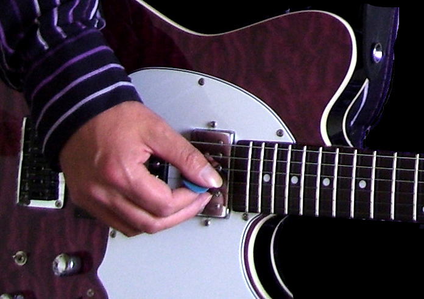

Go Play Guitar
Guitar Tuition
Guitar tuition from experienced teacher, former recording/touring session musician.
Musical styles range from rock, pop, folk, Classical, jazz and blues
Lessons are tailored to suit pupils needs and requirements according to musical taste and ability.
Learn to play from popular pieces, bespoke pieces or content from grade books.
20 years experience teaching private pupils from age 7 to 70, 12 years experience working
Currently a few spaces available for new pupils online via zoom,
Please get in touch via email -
FAETC teaching certificate/ Grade 8 rockschool guitar

on electric guitar, acoustic or bass.
Teaching content includes popular riffs, chords patterns, strumming techniques,
right hand fingerstyles based on classical or folk, scales and modes, compositional theory.
Practical development includes rhythm techniques, chord formation, lead guitar
techniques and improvisation.
Lessons can be for fun and personal development or students can take a more formal approach
studying towards grades with Trinity classical, Trinity rock/pop or RGT
(London College of Music) examination syllabus.
as a peripatetic guitar teacher in schools, working with students for GCSE and A level exam performances.
or in person in the South West Buckinghamshire area- High Wycombe, Marlow, Bourne End,
Great Missenden, Princes Risborough, Thame, Penn and Beaconsfield areas.
goplayguitar1(at)aol.com (remove brackets and replace "at" with "@")
or call Andy on - 0 7 5 7 0 8 7 6 5 2 1. (Remove spaces between numbers)
Enhanced DBS certificate.